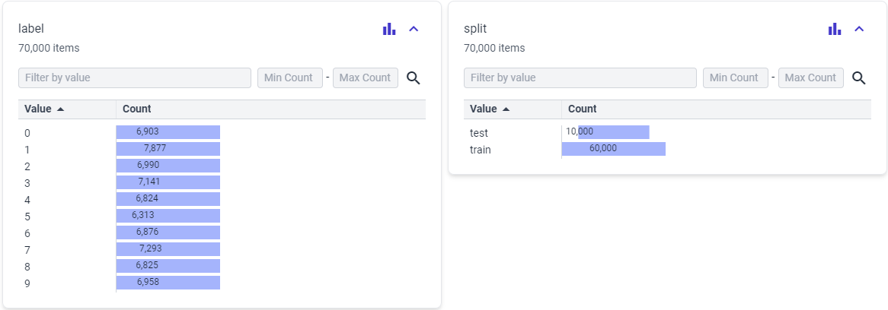
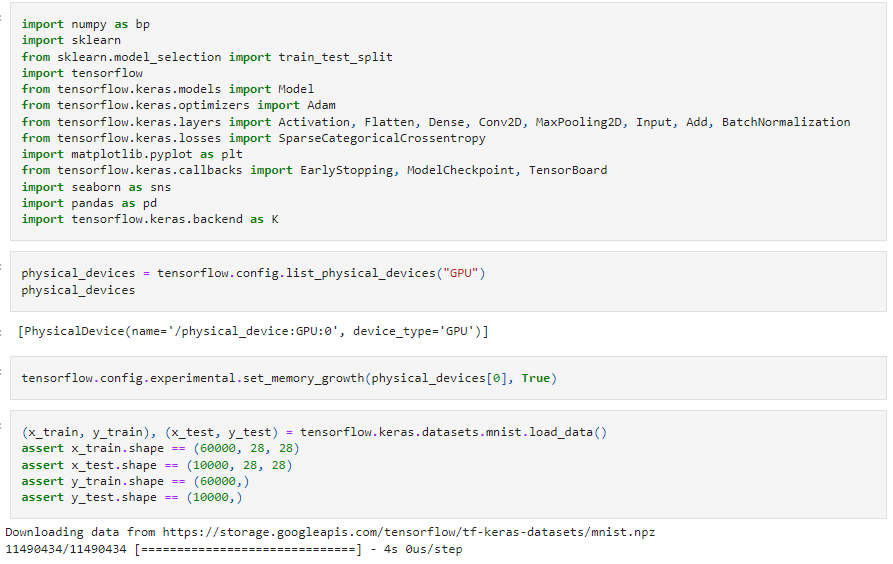
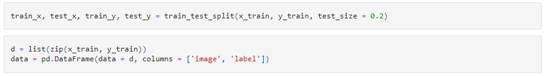
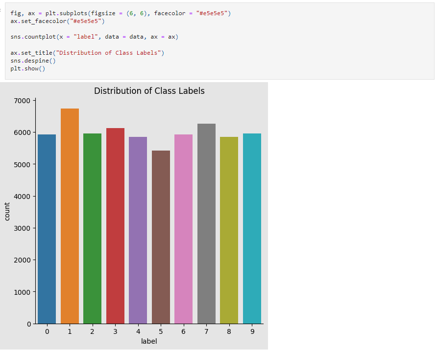
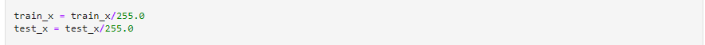
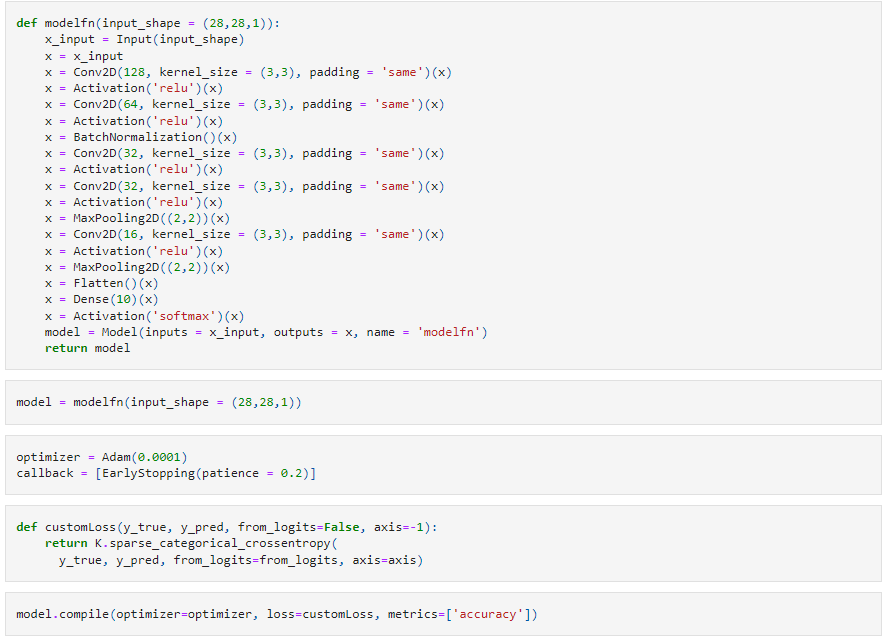
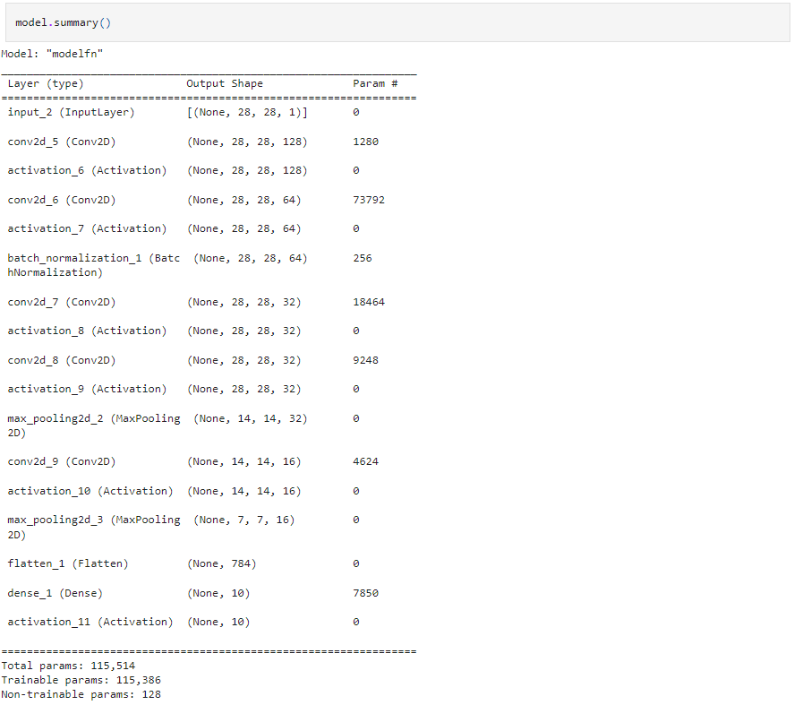

In this project, we are going to use the MNIST dataset for the implementation of a handwritten digit recognition app. To implement this we will use a special type of deep neural network called Convolutional Neural Networks
The MNIST dataset is a widely used dataset in the field of machine learning and computer vision. It stands for the "Modified National Institute of Standards and Technology" dataset. MNIST is a collection of 28x28 pixel grayscale images of handwritten digits (0 through 9) and their corresponding labels. It serves as a benchmark for testing and evaluating various machine learning algorithms, particularly those related to image recognition and classification.
The MNIST dataset has played a crucial role in advancing the field of computer vision and deep learning. Many beginners use it as a starting point for learning and implementing algorithms, and it has served as the foundation for developing and testing sophisticated neural networks, including Convolutional Neural Networks (CNNs). The simplicity and accessibility of MNIST make it a valuable resource for educational purposes and a benchmark for evaluating the effectiveness of new machine learning techniques.
We import every module required to train our model at the start of the project. Since MNIST is one of the many datasets currently included in the TensorFlow framework, we can import the dataset and get to work right away. To obtain training data with labels and testing data with labels, we utilize the mnist.load_data() function.
We divide the data into a train and test set in this stage and make sure the data is in the right format.
  Lets begin constructing the CNN model, for this data science project in Python. The key components of a CNN model are pooling layers and convolutional layers. CNN is effective for image classification tasks as it can handle data arranged in a grid format. To compile the model we will use the Sparse Categorical Crossentropy loss function along, with the Adam optimizer.
 To train the model we will use the .fit() function. For validation we set validation_split = 0.2, which ensures
that 20% of the training data is used for validation.
In the test set, the model's accuracy was 96.84%.